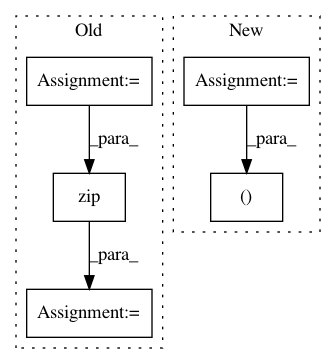

79edae58d5892c5a7eb19b68f9e79dfae4682e20,keras/backend/tensorflow_backend.py,Function,__call__,#Function#Any#,970
Before Change
def __call__(self, inputs):
assert type(inputs) in {list, tuple}
names = [getattr(v, "name", None) for v in self.inputs]
feed_dict = dict(zip(names, inputs))
session = get_session()
updated = session.run(self.outputs + [self.updates_op], feed_dict=feed_dict)
return updated[:len(self.outputs)]
After Change
feed_dict = {}
for tensor, value in zip(self.inputs, inputs):
if is_sparse(tensor):
sparse_coo = value.tocoo()
indices = np.concatenate((np.expand_dims(sparse_coo.row, 1), np.expand_dims(sparse_coo.col, 1)), 1)
value = (indices, value.data, value.shape)
feed_dict[tensor] = value
session = get_session()
In pattern: SUPERPATTERN
Frequency: 4
Non-data size: 5
Instances
Project Name: keras-team/keras
Commit Name: 79edae58d5892c5a7eb19b68f9e79dfae4682e20
Time: 2016-09-09
Author: kuza55@gmail.com
File Name: keras/backend/tensorflow_backend.py
Class Name: Function
Method Name: __call__
Project Name: GPflow/GPflow
Commit Name: deb4508578f7223fa1ad5e3b6458626c4b41ef09
Time: 2019-10-17
Author: 6815729+condnsdmatters@users.noreply.github.com
File Name: tests/test_methods.py
Class Name:
Method Name: test_sgpr_qu
Project Name: keras-team/keras
Commit Name: b95fcf7f52aca8ad0b1afb3cfc64c8eed534fafe
Time: 2017-07-29
Author: me@taehoonlee.com
File Name: tests/keras/backend/backend_test.py
Class Name:
Method Name: check_single_tensor_operation
Project Name: OpenNMT/OpenNMT-py
Commit Name: 3fc1db7454bfe9e378dc7a8f321ac22dfe8b0ea7
Time: 2017-09-12
Author: bpeters@coli.uni-saarland.de
File Name: onmt/Loss.py
Class Name:
Method Name: shards